Disassembly
1. Clean transmission exterior with steam gun or with solvent. Wear eye protection during cleaning operations.2. Place transmission in a vertical position.
3. Measure and record input shaft end play readings.
4. Remove shift and throttle levers from valve body manual lever shaft.
5. Place transmission in horizontal position.
6. Remove transmission oil pan end gasket.
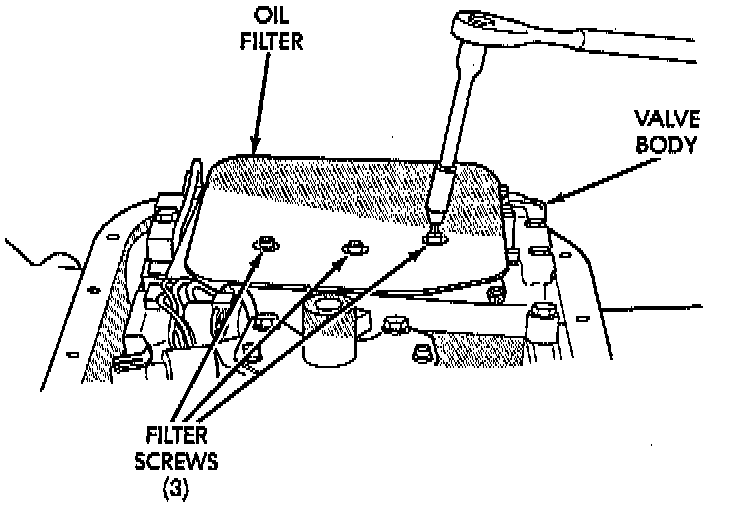
7. Remove filter from valve body. Keep filter screws separate from other valve body screws. Filter screws are longer and should be kept with filter.
8. Remove park neutral position switch.
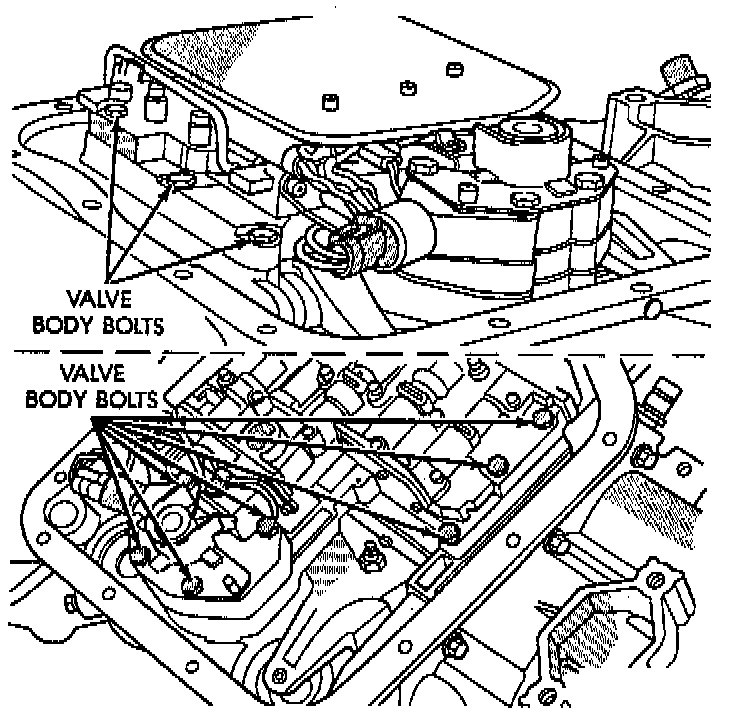
9. Remove hex head bolts attaching valve body to transmission case. A total of 10 bolts are used. Note different bolt lengths for assembly reference.
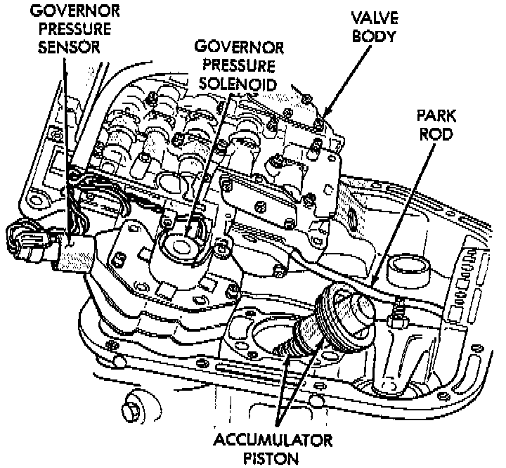
10. Remove valve body assembly. Push valve body harness connector out of case. Then work park rod and valve body out of case.
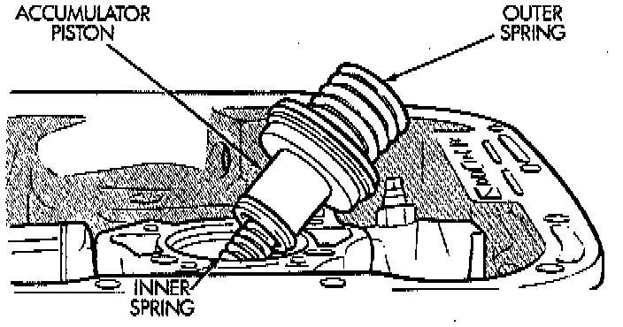
11. Remove accumulator piston and inner and outer springs.
12. Remove pump oil seal with suitable pry tool or slide-hammer mounted screw.
13. Loosen front band adjusting screw locknut 4-5 turns. Then tighten band adjusting screw until band is tight around front clutch retainer. This prevents front/rear clutches from coming out with pump and possibly damaging clutch or pump components.
14. Remove oil pump bolts.
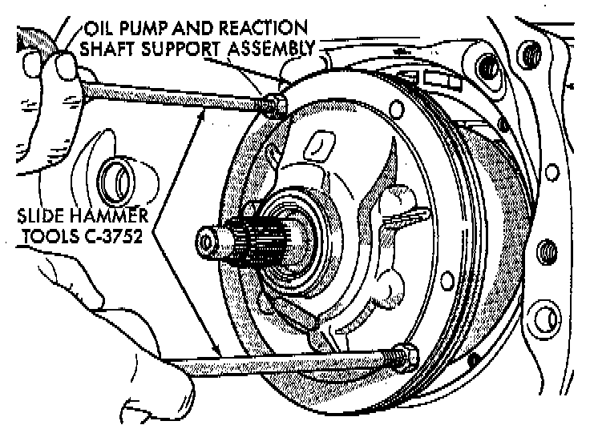
15. Thread bolts of Slide Hammer Tools C-3752, or equivalent into threaded holes in pump body flange.
16. Bump slide hammer weights outward to remove pump and reaction shaft support assembly from case.
17. Loosen front band adjusting screw until band is completely loose.
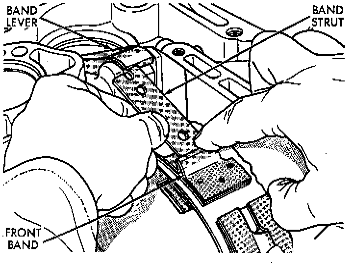
18. Squeeze front band together and remove band strut.
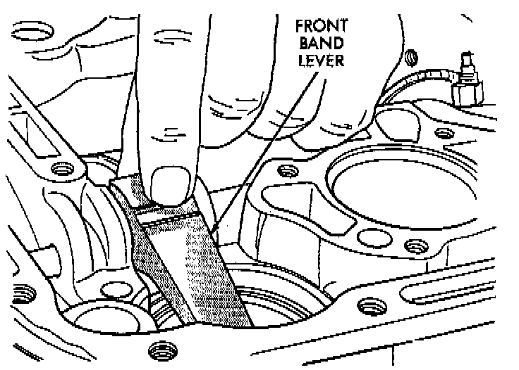
19. Remove front band lever.
20. Remove front band lever shaft plug, if necessary, from converter housing.
21. Remove front band lever shaft.
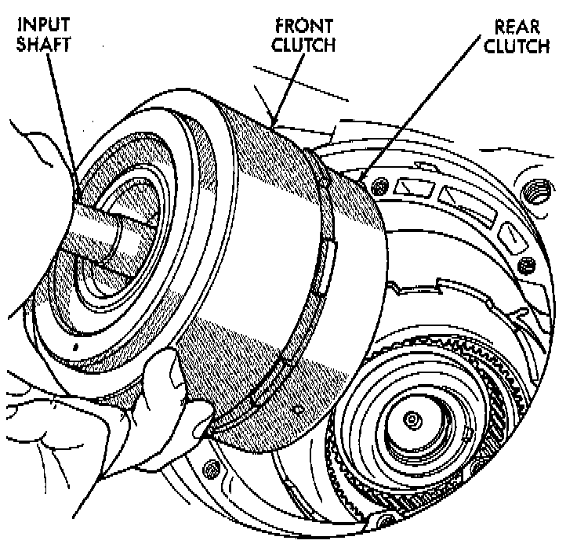
22. Remove front and rear clutch units as assembly. Grasp input shaft, hold clutch units together and remove them from case.
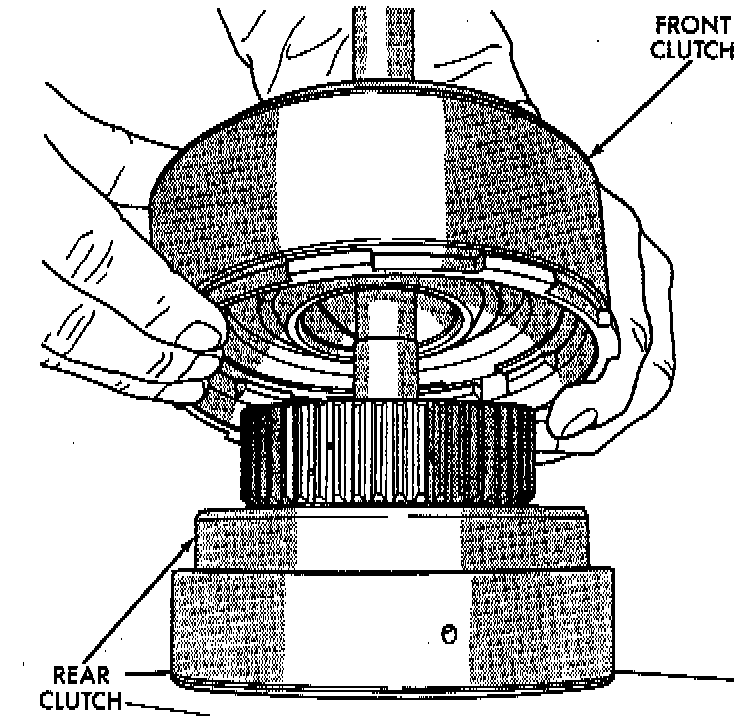
23. Lift front clutch off rear clutch. Set clutch units aside for overhaul.
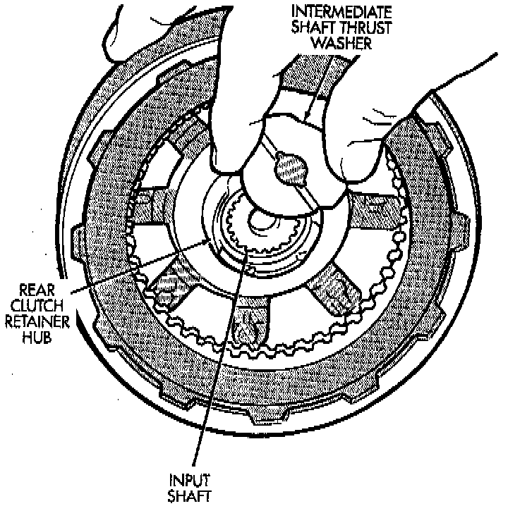
24. Remove intermediate shaft thrust washer from front end of shaft or from rear clutch hub.
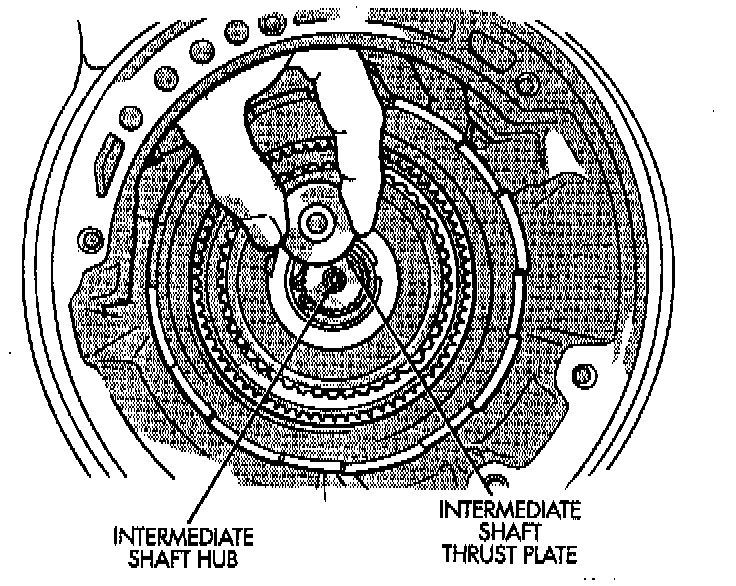
25. Remove output shaft thrust plate from intermediate shaft hub.
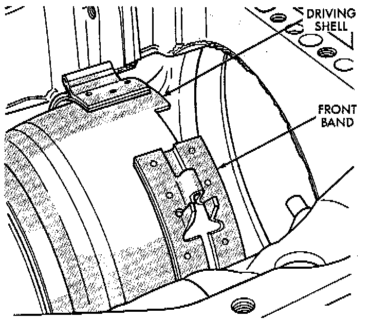
26. Slide front band off driving shell and remove band from case.
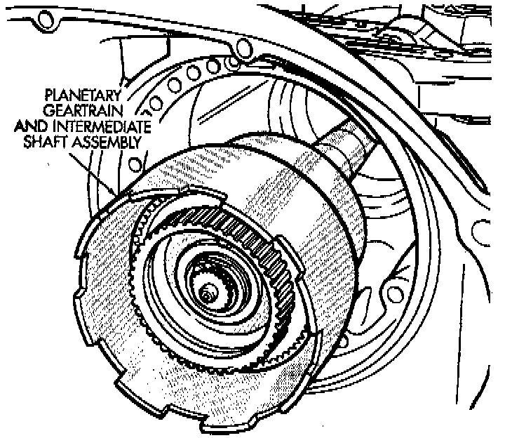
27. Remove planetary gear-train as assembly. Support gear-train with both hands during removal. Do not allow machined surfaces on intermediate shaft or overdrive piston retainer to become nicked or scratched.
28. If overdrive unit is not to be serviced, install Alignment Shaft 6227-2, or equivalent into the overdrive unit to prevent misalignment of the overdrive clutches during service of main transmission components.
29. Loosen rear band adjusting screw 4-5 turns.
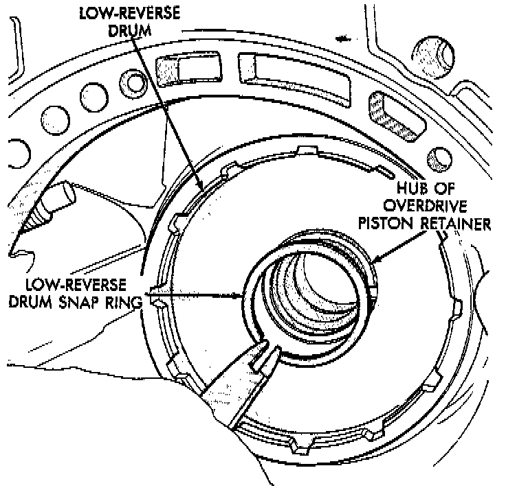
30. Remove low-reverse drum snap ring.
31. Remove low-reverse drum and reverse band.
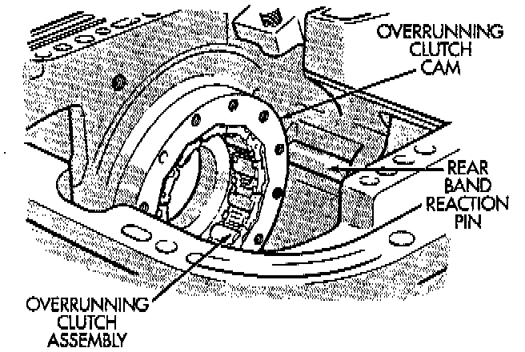
32. Remove overrunning clutch roller and spring assembly as a unit.
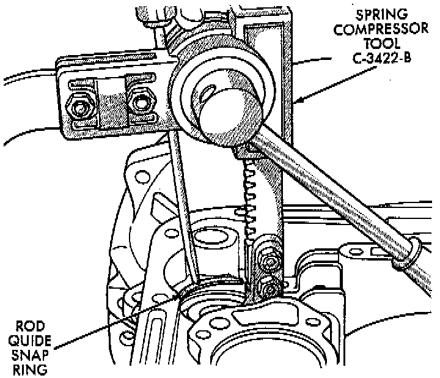
33. Compress front servo rod guide about 1/8 inch with Valve Spring Compressor C-3422-B, or equivalent.
34. Remove front servo rod guide snap ring. Exercise caution when removing snap ring. Servo bore can be scratched or nicked if care is not exercised.
35. Remove compressor tools and remove front servo rod guide, spring and servo piston.
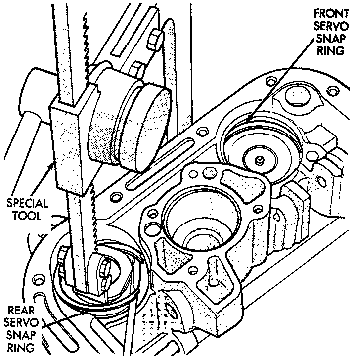
36. Compress rear servo spring retainer about 1/16 inch with Valve Spring Compressor C-3422-B, or equivalent.
37. Remove rear servo spring retainer snap ring. Then remove compressor tools and remove rear servo spring and piston.
38. Inspect transmission components.